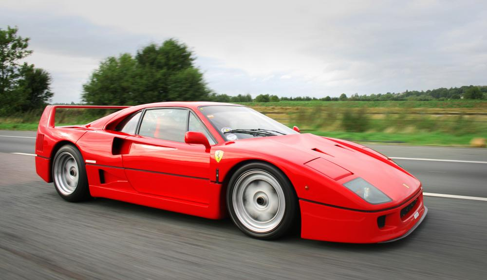
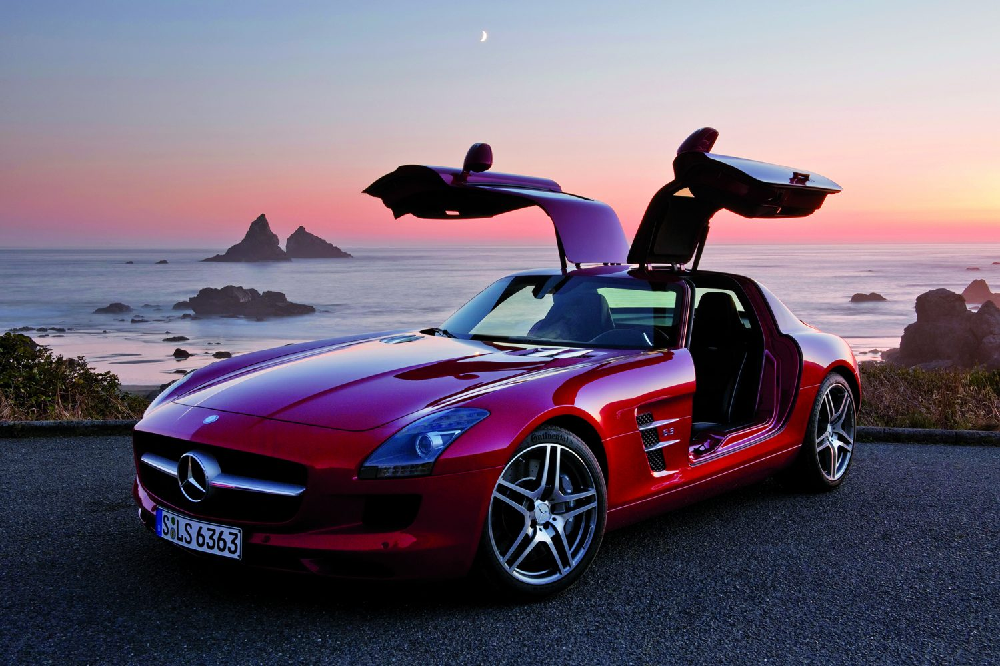
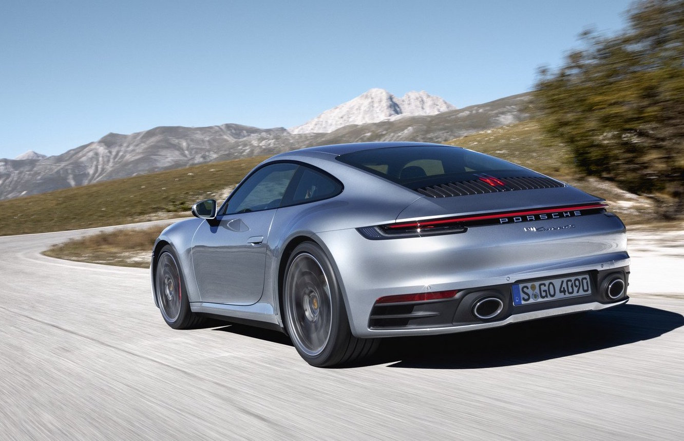
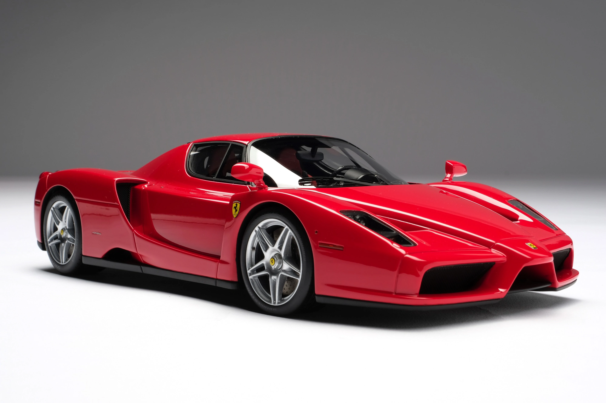
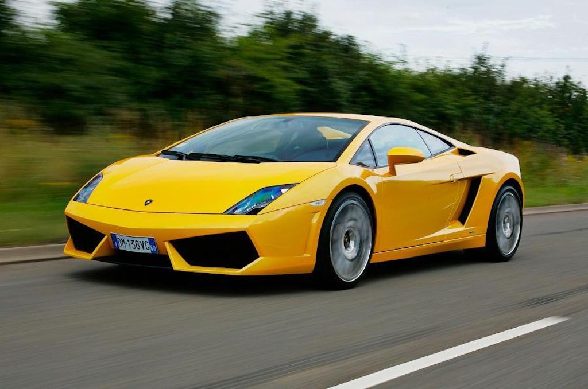

1.
FERRARI
MODELLO: F40
Modello realizzato per celebrare i 40 anni della casa, era una velocissima berlinetta disegnata da Pininfarina, costruita facendo largo impiego di materiali compositi. La meccanica raffinata unita ad un telaio di primissimo ordine, la rendevano vettura dalle eccellenti doti dinamiche con un motore V8 che forniva una potenza di oltre 470 cv, garantendo prestazioni molto vicine a quelle di un prototipo da competizione. Nonostante sia stata realizzata a partire dal 1987, lontano dagli inizi del 2000, le sue caratteristiche la rendono una delle auto che devono essere necessariamente presente in queste liste.
Intramontabile.
2.
MERCEDES
MODELLO: SLS AMG
La storia della SLS AMG comincia con un divorzio storico: quello tra Daimler AG e McLaren, dopo una collaborazione stretta che ha portato soprattutto grandi successi in Formula 1, ma che ha anche permesso la creazione di una Gran Turismo come la SLR McLaren. La presentazione ufficiale della nuova Gran Turismo, rimasta solo Mercedes, iniziò nel settembre 2009, ma la commercializzazione non ebbe inizio che sei mesi dopo, con il nome di SLS AMG. La data prevista per l'inizio della commercializzazione non è stata casuale, poiché in tale data si sono avute le qualifiche del GP d'Australia di Formula 1, dove la SLS AMG ha fatto il suo esordio come safety car. Le caratteristiche tecniche le consentono di ottenere prestazioni notevoli: una velocità massima di 320 km/h, dato il motore V8, con uno scatto da 0 a 100 km/h coperto in 3"8; Malgrado, immagino, non sia molto comoda da usare per tutti i giorni, le sue prestazioni la rendono una delle auto migliori prodotte in questo periodo.
Elegante.
3.
PORSCHE
MODELLO: 911 CARRERA-S
La Porsche 991 CARRERA S è un'automobile sportiva prodotta dalla casa automobilistica tedesca Porsche come quinta generazione della 911, in sostituzione della 997. La linea è inconfondibilmente Porsche con i classici fari anteriori tondi, luci di marcia diurna con tecnologia LED. Il posteriore è stato cambiato solo in alcuni particolari, spiccano i nuovi fari dal profilo basso e allungato. La 991 è stata rivista nel 2015, per essere poi commercializzata nel 2016. La Porsche 991 aggiornata, denominata internamente dalla Porsche col nome in codice 991.2, ha introdotto il nuovo design e una nuova gamma motori che rendevano l'auto utilizzabile sia su strada sia pista (appunto che gareggia in un campionato proprio, International Porsche Supercup) Il motore più piccolo è il nuovo 3.0 litri bi-turbo, V6. Questa unità è stata equipaggia per la prima volta i modelli Carrera s con un motore turbo, abbandonando quelli aspirati da 3.4 litri. La potenza massima della Carrera S è di 420 CV.
Performante.
4.
TESLA
MODELLO: MODEL-S
Nome in codice White Star. L'idea della Model S nasce dalla volontà dell'azienda di creare la prima berlina con motore elettrico alimentata esclusivamente tramite batterie ricaricabili. Ciò ha reso progettisti e designer liberi dai vincoli imposti da motore termico. Nasce così una piattaforma all'epoca inedita, costituita da una batteria sottile ma larga quanto l'auto, posta tra i due assi. La produzione iniziò nel luglio 2012 a Fremont, in California con le prime consegne negli Stati Uniti d'America, mentre in Europa è arrivata più di un anno dopo, nell'agosto 2013. Il motore elettrico, che nel 2016 ha subito modifiche alla drive unit, arrivando così fino a 320 cv di potenza, è poco voluminoso e posizionato sull'asse posteriore. Questo design garantisce all'auto stabilità abbassando notevolmente il baricentro, oltre a donare maggiore volume all'abitacolo e al bagagliaio rispetto a un'auto con motore termico. A mani basse, una delle migliori auto elettriceh create fino a ad oggi grazie anche alla genialità del fondatore Elon Musk.
Raffinata.

5.
FERRARI
MODELLO: ENZO
Venne presentata ufficialmente al Salone dell'automobile di Parigi nell'ottobre del 2002. Nata sulla base dell'esperienza in Formula 1, la Enzo è una delle auto più ammirate e ricercate dagli appassionati. Esteticamente è caratterizzata da un linguaggio stilistico estremamente tecnico e privo di velleità. La sua linea si deve, come per molti altri modelli Ferrari, alla carrozzeria Pininfarina. Stava per essere chiamata F60 ma in seguito il nome della vettura venne dedicato al fondatore dell'azienda Enzo Ferrari. La Enzo dispone di un motore V12 di 65° aspirato chiamato F140 B, erogante 660 cavalli.
Iconica.
6.
LAMBORGHINI
MODELLO: GALLARDO
Fu prodotta dal 2003 al 2013 e fu la vettura di maggior successo della casa. Grazie alle sue proporzioni era molto più vicino ai concetti delle Lamborghini degli anni ’70 ed ’80. Figlia del prototipo Calà degli anni 90, fu la prima vettura prodotta dopo l’acquisizione del gruppo Audi. Era dotata del V10 di derivazione Audi da 500 cv, per l’appunto. Fu prodotta in 35 versioni che andavano dalle coupè alle spider passando per modelli a 4 ruote motrici o a trazione posteriore. Uno dei pezzi più belli da tenere custodito in garage.
Aggressiva.
